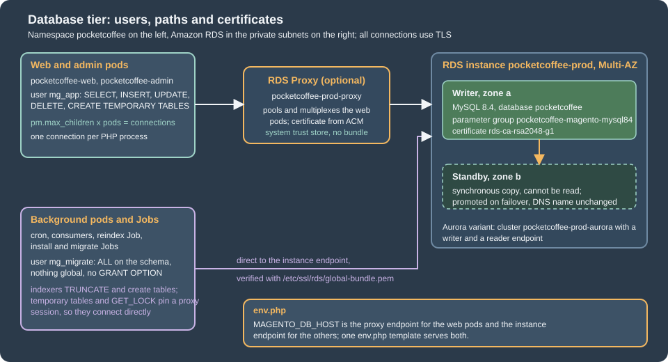
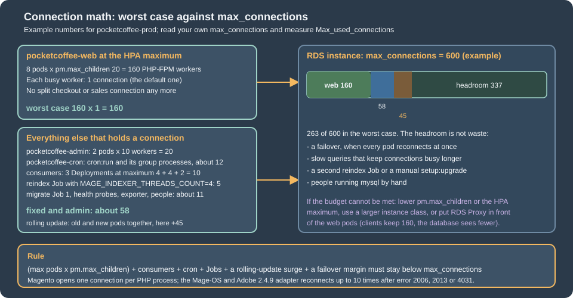

Cloud: Managed Database (RDS and Aurora)
|
This content was generated with the assistance of AI and should be verified against the official documentation before being relied on in production. |
This page was written against Magento Open Source and Adobe Commerce 2.4.9 (generally available 2026-05-12) and Mage-OS 3.6.0, which is built on
the 2.4.9 code base, on PHP 8.5 (with 8.4 measured for the driver options), Amazon RDS for MySQL 8.4 and MariaDB 12.3, Aurora MySQL 3,
OpenTofu 1.12 with the AWS provider 6.71, and Kubernetes 1.36 or 1.37 on Amazon EKS, and was checked on 2026-10-29. The running example is the
fictitious shop Pocket Coffee (www.pocketcoffee.example) on the EKS cluster pocketcoffee-prod in eu-west-1, account 123456789012, with the RDS
instance pocketcoffee-prod, the database pocketcoffee, an empty table prefix and the users mg_app and mg_migrate. The page names no prices:
cost drivers are named and every size is a starting point to measure.
It is the database tier of the Cloud: Reference Architecture. How RDS and Aurora work is on Amazon RDS and Amazon Aurora, the network is on VPC Networking and the secrets service on Secrets Manager and KMS, so none of that is repeated. The same tier for other applications is on WordPress: Managed Database and PrestaShop: Managed Database; the engine facts, the user model and several findings below are Magento’s own and differ from both. Creating the schema and its upgrades is the job of Declarative Schema and Patches and Upgrades; here the question is what the managed server and the pods must agree on for that to work.
The method: the classes were read in the Magento 2.4.9 tag and in the Mage-OS 3.6.0 tag (lib/internal/Magento/Framework/DB/Adapter/Pdo/Mysql.php,
Model/ResourceModel/Type/Db/Pdo/Mysql.php, Config/ConfigOptionsListConstants.php, Lock/Backend/Database.php, the indexers), Adobe’s documentation was
read for the support matrix and the replica module, and every claim that could be tested was run. A MySQL 8.4.11 container with
require_secure_transport=ON and a server certificate signed by a private CA stood in for RDS; a MariaDB 11.8.9 container with binary logging stood in for
the MariaDB engine; PHP 8.4.27 and 8.5.12 with pdo_mysql connected to the MySQL server with the exact env.php excerpt of this page, loaded the way Magento
loads it. The grants and the db-check.sql script ran on MySQL 8.4.11, the OpenTofu files passed tofu validate and tofu fmt -check, the PHP files
php -l and the shell script shellcheck. What could not be done (no AWS account, no cluster, a full Magento installation against the TLS-only server,
a real RDS Proxy, a real failover) is listed at the end.

What Magento asks of the database
Magento is a client with habits that decide how to size, secure and configure the tier. All of the following were read in the 2.4.9 and 3.6.0 sources (the same lines in both) and, where it says so, run.
-
One connection per PHP process, and only one name. The adapter
Magento\Framework\DB\Adapter\Pdo\Mysqlconnects lazily and shares one connection for every resource that maps to the connectiondefault(ResourceConnection::getConnectionByName()throwsConnection "x" is not definedfor a name thatenv.phpdoes not have). A freshly installedenv.phphas the connectiondefaultonly (see the installation page), so one busy PHP-FPM worker is one database connection; there is no second client library as in PrestaShop. Acron:run, a consumer, an indexer thread and abin/magentocommand are processes too. -
No persistent connections, no pool. The connection ends with the process. A consumer started with
queue:consumers:startholds its connection for as long as it runs. -
Session setup on every connect. After connecting, the adapter runs
SET SQL_MODE=''andSET time_zone = '+00:00', then theinitStatementsofenv.phpor, when the key is absent, a statement chosen from the server version byDefaultCharsetCollationMap(SET NAMES utf8mb4 COLLATE utf8mb4_general_cifor MySQL 8.0.29 and later and for MariaDB 10.4 and later). It then setsPDO::ATTR_EMULATE_PREPARESto true and a buffered query attribute. Three consequences: the serversql_modenever reaches Magento’s own connection (Adobe recommendsSTRICT_ALL_TABLES, which therefore only applies to sessions that do not go through the adapter); the server collation default matters only for objects created outside Magento; and no server-side prepared statements are used, which matters for RDS Proxy below. -
Automatic reconnect.
performQuery()catches the PDO error codes 2006 (server has gone away), 2013 (lost connection during query) and 4031 (disconnected because of inactivity), closes the connection, connects again and runs the statement again, up toMAX_CONNECTION_RETRIES, which is 10. That is the behaviour the failover section depends on. -
Triggers. In "Update by Schedule" mode every indexer subscribes to its source tables with database triggers (
Magento\Framework\Mview); Adobe says the application creates them and supports no custom ones. Adobe says they are created when the indexer mode is set to schedule (indexer:set-mode schedule). -
DDL and TRUNCATE outside installation. The indexers call
truncateTable()(for exampleCatalog\Model\Indexer\Category\Product\Action\Full,RowsandProduct\Price\TableMaintainer), the price and category maintainers create and drop per-store and per-dimension tables (createTableByDdl(),createTablesForStore()), and the report refresh truncates its tables. The indexers also create temporary tables (createTemporaryTableLike()). The users section turns that into grants. -
Named locks. The default lock provider is
db;Magento\Framework\Lock\Backend\Databasetakes locks withSELECT GET_LOCK(?, ?). Adobe’s lock documentation lists the providersdb(default),zookeeperandfile(and the source also has aCachebackend);fileis per pod, so it does not serialize anything across pods. The cron and consumer page decides which one a cluster uses; this page only needs the fact thatGET_LOCKpins an RDS Proxy session. -
The server version is not checked at runtime. Adobe lists what it tests (next section), but nothing in the request path refuses another engine.
Choosing the engine and version
Adobe’s system requirements for 2.4.9 list the database like this on the check date:
| Software | On-premises (what an RDS shop is) | Adobe Commerce on cloud infrastructure |
|---|---|---|
MariaDB |
12.3 |
12.3 (recommended), 11.8 |
MySQL |
8.4 |
not listed |
AWS Aurora (MySQL) |
|
not listed |
What follows from it, with the three points that the issue behind this section asked to verify:
-
Aurora is listed. The on-premises table names "AWS Aurora (MySQL)" at
8.0.mysql_aurora.3.12or the latest available version, so Aurora MySQL 3 (compatible with MySQL 8.0) is a supported database for 2.4.9. Aurora MySQL 8.4, generally available since 2026-05-21 with engine versions such as8.4.mysql_aurora.8.4.7, is not named by Adobe: verify with Adobe Support before choosing it for a licensed Adobe Commerce shop. Mage-OS publishes no separate matrix; its 3.6.0 code is the 2.4.9 code. -
Amazon RDS is not named. The table lists engines, not services. RDS for MySQL 8.4 and RDS for MariaDB 12.3 are the listed engines on a managed service; the page does not say that RDS is supported or unsupported, so read it as "the engine is tested, the service is yours".
-
MySQL 8.0 is out. The existing site pages record that 2.4.9 lists MySQL 8.4 only, that MySQL 8.0 reached end of support on 2026-04-30 and that RDS standard support for 8.0 ended on 2026-07-31 (see Versions, Lifecycle and Requirements).
-
Tested is MariaDB 12.3. Adobe says 2.4.9 is tested with MariaDB 12.3 and that a shop on MariaDB 11.8 is outside the tested configuration. RDS for MariaDB offers 12.3 since 2026-08-07, with standard support until June 2029; RDS for MySQL 8.4 has standard support until 2029-07-31. Both are defensible. The difference that matters for operations is in the parameter section: MariaDB needs
log_bin_trust_function_creatorsfor the indexer triggers, and MySQL 8.4 did not in the test.
The recommendation for Pocket Coffee is RDS for MySQL 8.4 with Multi-AZ, the engine of this section’s examples; RDS for MariaDB 12.3 is the equally defensible
choice for a team that already runs MariaDB and wants to stay on Adobe’s tested engine, and nothing else on this page changes except the parameter group family
(mariadb12.3, to be read from describe-db-engine-versions, see below) and the two points above. Move to Aurora when reads can leave the writer (only Adobe Commerce can
use a reader, see the replica section), when failover must be faster than a Multi-AZ DNS change, or when the database outgrows comfortable resizing. An
engine change later is a dump and restore (Cloud: Migrating from a Single Server), so decide it once. The
same engines on Google Cloud and Azure are on Cloud: Google Cloud, Azure and Alternatives.
Two commands print the exact engine version strings and parameter group families for your account and region; read them instead of copying a string from a page:
# RDS for MySQL 8.4 and RDS for MariaDB 12.3: versions and the parameter group family of each.
aws rds describe-db-engine-versions --engine mysql --engine-version 8.4 \
--query 'DBEngineVersions[].[EngineVersion,DBParameterGroupFamily]' --output text
aws rds describe-db-engine-versions --engine mariadb \
--query 'DBEngineVersions[?starts_with(EngineVersion, `12.3`)].[EngineVersion,DBParameterGroupFamily]' --output text
# Aurora MySQL: the strings Adobe's 8.0.mysql_aurora.3.12 stands for, and the families.
aws rds describe-db-engine-versions --engine aurora-mysql \
--query 'DBEngineVersions[].[EngineVersion,DBParameterGroupFamily]' --output textThe parameter group and the instance
RDS does not let you edit my.cnf. Settings live in a parameter group of the right family (mysql8.4 here), and a parameter is dynamic (applied
at once) or static (applied at the next reboot). Changing the group attached to a Multi-AZ instance can mean a reboot, which is a failover, so plan it
as the WordPress page describes. The Pocket Coffee group changes only what Magento and operations need:
| Parameter | Value | Why |
|---|---|---|
|
|
Magento connects with |
|
|
With binary logging on (RDS turns it on when automated backups are on) MariaDB refuses |
|
|
Adobe supports row-based replication only. MySQL deprecated the parameter in 8.0.34 and RDS still accepts it for 8.4; RDS recommends mixed unless a format is needed. Set it explicitly because a read replica or a migration with AWS DMS depends on it |
|
|
64 MiB. Adobe asks to raise it above 16 MB for large product imports. The upstream MySQL 8.4 default measured here is already 64 MiB; the RDS default was not verified, so set it |
|
|
Adobe: the indexers need higher values, for example 64 MiB. The measured MySQL 8.4 default is 16 MiB |
|
|
Refuses unencrypted connections. Safe only once the pods connect with TLS, which Magento does not do by itself (next section). Set it after the CA bundle is in the image |
|
|
The slow query log goes to a file that RDS exports to CloudWatch Logs. One second is a coarse start |
Parameters that are not changed, on purpose:
-
sql_modestays at the engine default. The adapter overrides it on every connection (above), so a server value does not reach Magento; changing it only affects people at amysqlprompt. -
explicit_defaults_for_timestampstays at the default. Adobe says it must be on, because otherwisebin/magento setup:db:statusalways reports the declarative schema as out of date. The measured MySQL 8.4 default is on; read it withdb-check.sql(below) on the engine you pick, and set it in the group for an engine whose default is off. -
max_connectionskeeps the RDS default, derived from the instance memory. Read it withSHOW GLOBAL VARIABLES LIKE 'max_connections'instead of calculating it, and design the pod fleet to stay under it (connection math, below). -
innodb_buffer_pool_sizekeeps the RDS default until the working set is known. Adobe’s rule is that the indexes of Magento’s tables fit in memory. -
time_zonestays UTC; the adapter sets+00:00on every connection. -
GTID settings stay at the engine default. Adobe documents that Magento creates temporary tables inside transactions, which is incompatible with
enforce_gtid_consistencyon some managed services (it names Google Cloud SQL second-generation instances); do not turn GTID enforcement on.
The group, the instance, the subnet group and the proxy of the RDS Proxy section as one OpenTofu file. The instance and its subnets are part of the full infrastructure of Cloud: EKS Infrastructure and Helm Deployment, which owns the variable names; the excerpt here is self-contained so that it can be validated. The instance class and the sizes are assumptions to measure.
terraform {
required_version = ">= 1.9"
required_providers {
aws = {
source = "hashicorp/aws"
version = "~> 6.70"
}
}
}
variable "private_subnet_ids" {
type = list(string)
description = "Private subnets in at least two Availability Zones, from the VPC module."
}
variable "db_security_group_id" {
type = string
description = "Security group of the database. Allows 3306 from the node security group and from the proxy."
}
variable "proxy_security_group_id" {
type = string
description = "Security group of the RDS Proxy. Allows 3306 from the node security group."
}
variable "app_secret_arn" {
type = string
description = "Secrets Manager secret in the RDS database credential format (username, password) for mg_app, read by the proxy."
}
# The family must match the engine version: mysql8.4 for RDS for MySQL 8.4.
resource "aws_db_parameter_group" "magento" {
name = "pocketcoffee-magento-mysql84"
family = "mysql8.4"
description = "Pocket Coffee Magento on MySQL 8.4"
# Magento sets utf8mb4 with utf8mb4_general_ci on every connection; the server default matches it.
parameter {
name = "character_set_server"
value = "utf8mb4"
}
parameter {
name = "collation_server"
value = "utf8mb4_general_ci"
}
# Adobe supports row-based replication only. The parameter is deprecated in MySQL 8.4 but still accepted by RDS.
parameter {
name = "binlog_format"
value = "ROW"
}
# Needed on MariaDB (error 1419 when creating the indexer triggers); not needed for triggers on MySQL 8.4.
# Kept so that the same group works for dumps with routines and for a later engine change.
parameter {
name = "log_bin_trust_function_creators"
value = "1"
}
# 64 MiB: product imports and large serialized values exceed the 16 MiB default.
parameter {
name = "max_allowed_packet"
value = "67108864"
}
# Adobe: the indexers need higher tmp_table_size and max_heap_table_size, for example 64 MiB.
parameter {
name = "tmp_table_size"
value = "67108864"
}
parameter {
name = "max_heap_table_size"
value = "67108864"
}
# Refuses unencrypted connections. Set it only after env.php carries the CA bundle.
parameter {
name = "require_secure_transport"
value = "1"
}
parameter {
name = "slow_query_log"
value = "1"
}
parameter {
name = "long_query_time"
value = "1"
}
parameter {
name = "log_output"
value = "FILE"
}
}
resource "aws_db_subnet_group" "magento" {
name = "pocketcoffee-prod"
subnet_ids = var.private_subnet_ids
}
resource "aws_db_instance" "magento" {
identifier = "pocketcoffee-prod"
engine = "mysql"
engine_version = "8.4"
instance_class = "db.r7g.large"
db_name = "pocketcoffee"
username = "mg_admin"
# RDS creates and rotates the master password in Secrets Manager; it is never in the state file or in Git.
manage_master_user_password = true
multi_az = true
db_subnet_group_name = aws_db_subnet_group.magento.name
vpc_security_group_ids = [var.db_security_group_id]
publicly_accessible = false
parameter_group_name = aws_db_parameter_group.magento.name
ca_cert_identifier = "rds-ca-rsa2048-g1"
allocated_storage = 200
max_allocated_storage = 800
storage_type = "gp3"
storage_encrypted = true
# Automated backups also turn binary logging on.
backup_retention_period = 14
copy_tags_to_snapshot = true
deletion_protection = true
skip_final_snapshot = false
final_snapshot_identifier = "pocketcoffee-prod-final"
enabled_cloudwatch_logs_exports = ["error", "slowquery"]
auto_minor_version_upgrade = true
}
data "aws_iam_policy_document" "proxy_assume" {
statement {
actions = ["sts:AssumeRole"]
principals {
type = "Service"
identifiers = ["rds.amazonaws.com"]
}
}
}
resource "aws_iam_role" "proxy" {
name = "pocketcoffee-prod-rds-proxy"
assume_role_policy = data.aws_iam_policy_document.proxy_assume.json
}
data "aws_iam_policy_document" "proxy_secret" {
statement {
actions = ["secretsmanager:GetSecretValue"]
resources = [var.app_secret_arn]
}
}
resource "aws_iam_role_policy" "proxy_secret" {
role = aws_iam_role.proxy.id
policy = data.aws_iam_policy_document.proxy_secret.json
}
resource "aws_db_proxy" "magento" {
name = "pocketcoffee-prod-proxy"
engine_family = "MYSQL"
role_arn = aws_iam_role.proxy.arn
vpc_subnet_ids = var.private_subnet_ids
vpc_security_group_ids = [var.proxy_security_group_id]
require_tls = true
idle_client_timeout = 1800
auth {
auth_scheme = "SECRETS"
iam_auth = "DISABLED"
secret_arn = var.app_secret_arn
}
}
resource "aws_db_proxy_default_target_group" "magento" {
db_proxy_name = aws_db_proxy.magento.name
connection_pool_config {
max_connections_percent = 80
max_idle_connections_percent = 40
connection_borrow_timeout = 30
}
}
resource "aws_db_proxy_target" "magento" {
db_proxy_name = aws_db_proxy.magento.name
target_group_name = aws_db_proxy_default_target_group.magento.name
db_instance_identifier = aws_db_instance.magento.identifier
}
output "database_endpoint" {
value = aws_db_instance.magento.address
}
output "proxy_endpoint" {
value = aws_db_proxy.magento.endpoint
}Notes on the file. manage_master_user_password = true lets RDS create the master secret in Secrets Manager and rotate it, so the mg_admin password never
enters the state or Git; the application users are created by the release process from the secret pocketcoffee/prod/magento (keys db_app_password and
db_migrate_password). ca_cert_identifier names the certificate authority that signs the server certificate (rds-ca-rsa2048-g1 is the default).
deletion_protection and the final snapshot guard against a mistaken tofu destroy. Run tofu plan and read whether the provider reports a pending reboot before
applying a parameter change. For RDS for MariaDB 12.3 replace the engine, the family (read from the command above) and the parameter names that MariaDB does not have
(binlog_format exists, but tmp_table_size and max_heap_table_size should be checked against the MariaDB parameter list); the file was validated for MySQL only.
The group can be checked from a client after tofu apply; this script, which also lists who holds connections, ran on MySQL 8.4.11 (the values that RDS sets are different, the statements are not):
-- Run as mg_migrate or the RDS master user, on the writer endpoint, over TLS.
SELECT VERSION() AS version, @@log_bin AS log_bin, @@binlog_format AS binlog_format,
@@log_bin_trust_function_creators AS trust_function_creators,
@@explicit_defaults_for_timestamp AS explicit_defaults_for_timestamp;
SELECT @@character_set_server AS charset, @@collation_server AS collation,
@@max_allowed_packet AS max_allowed_packet, @@tmp_table_size AS tmp_table_size,
@@max_heap_table_size AS max_heap_table_size, @@max_connections AS max_connections,
@@require_secure_transport AS require_secure_transport;
SHOW GLOBAL STATUS LIKE 'Max_used_connections';
SHOW GLOBAL STATUS LIKE 'Threads_connected';
SHOW GLOBAL STATUS LIKE 'Aborted_connects';
-- Who holds the connections right now, by user and client address.
SELECT user, SUBSTRING_INDEX(host, ':', 1) AS client, COUNT(*) AS connections, SUM(command = 'Sleep') AS idle
FROM information_schema.processlist
GROUP BY user, client
ORDER BY connections DESC;
-- The triggers Magento created for the indexers in Update by Schedule mode, and who owns them.
SELECT trigger_name, event_object_table, definer
FROM information_schema.triggers
WHERE trigger_schema = DATABASE()
ORDER BY event_object_table
LIMIT 10;
-- Is this session encrypted? (Run it from the client you are testing.)
SHOW SESSION STATUS LIKE 'Ssl_version';On the scratch server it printed 8.4.11, log_bin 1, binlog_format ROW, log_bin_trust_function_creators 0, explicit_defaults_for_timestamp 1, the charset utf8mb4
with the collation utf8mb4_0900_ai_ci, a max_allowed_packet of 67108864, tmp_table_size and max_heap_table_size of 16777216, max_connections 151 and an Ssl_version of TLSv1.3.
TLS to the database
RDS accepts unencrypted connections unless require_secure_transport is on, and the pods should never use one: the traffic crosses the VPC and carries customer data
and password hashes. Magento, unlike PrestaShop, has a supported place for the client’s TLS settings: the driver_options array of the connection in env.php, which the adapter passes
to new \PDO($dsn, $user, $password, $driver_options). Adobe documents the same settings for installation: setup:install and setup:config:set have the options --db-ssl-key, --db-ssl-cert,
--db-ssl-ca (the server certificate) and the flag --db-ssl-verify, and the source writes them to db/connection/default/driver_options. Adobe’s env.php reference page does not
mention driver_options; the source is the authority.
The trap: PDO attribute numbers change with PHP
driver_options is keyed by numbers, the values of PDO constants, and those values are not stable. Measured on the official images with pdo_mysql:
Constant (Pdo\Mysql::...) |
PHP 8.4.27 | PHP 8.5.12 |
|---|---|---|
|
1007 |
1006 |
|
1008 |
1007 |
|
1009 |
1008 |
|
1013 |
1012 |
|
1014 |
1013 |
Two consequences, both measured. First, an env.php that a PHP 8.4 setup:install wrote (CA key 1009) means something else on PHP 8.5, where the CA option is 1008: the connection
below, on PHP 8.5 with the numbers of 8.4 (1009 and 1014), connected with TLS but without using the CA file at all, so it
verified nothing, and no error was shown. Second, in Magento 2.4.9 the verify key is hard-coded as 1014 (KEY_MYSQL_SSL_VERIFY = 1014 in ConfigOptionsListConstants, with a comment
that the PHP constant did not exist in PHP 7.1.3), while the CA, key and certificate keys use the Pdo\Mysql constants from PHP 8.4 on; on PHP 8.5, --db-ssl-verify therefore
writes an attribute that is not the verify option. Mage-OS 3.6.0 uses the constant for the verify key too. The 1013 => false that the Mage-OS installer wrote in the installation page of this site, on PHP 8.5.12, matches that: on PHP 8.5, 1013 is the verify option, and the installer left it off.
The rule for a cluster follows: build env.php from the constants by name, as below, and test the TLS verification when the PHP minor version of the image changes.
env.php with values from the environment
The env.php of the cluster is a template in a ConfigMap, mounted read-only with subPath, that reads every environment-specific value with getenv(). It is a PHP file that returns an
array, so constants and a conditional can be used. This is its database part, the exact file that ran in the tests (the other nodes are on
Cloud: OpenSearch, Valkey and RabbitMQ as Managed Services and the chart page):
<?php
// Excerpt of app/etc/env.php, mounted from the ConfigMap pocketcoffee-env-php. Only the database keys are shown.
// PDO attribute numbers differ between PHP versions (the CA option is 1009 on PHP 8.4 and 1008 on 8.5), so the
// constants are used by name and never written as numbers.
$sslCa = PHP_VERSION_ID >= 80400 ? \Pdo\Mysql::ATTR_SSL_CA : \PDO::MYSQL_ATTR_SSL_CA;
$sslVerify = PHP_VERSION_ID >= 80400 ? \Pdo\Mysql::ATTR_SSL_VERIFY_SERVER_CERT : \PDO::MYSQL_ATTR_SSL_VERIFY_SERVER_CERT;
$multiStmt = PHP_VERSION_ID >= 80400 ? \Pdo\Mysql::ATTR_MULTI_STATEMENTS : \PDO::MYSQL_ATTR_MULTI_STATEMENTS;
// Workloads that run indexers or schema changes set the migrate user; the web pods leave it unset.
$dbUser = getenv('MAGENTO_MIGRATE_DB_USER') ?: getenv('MAGENTO_DB_USER');
$dbPassword = getenv('MAGENTO_MIGRATE_DB_PASSWORD') ?: getenv('MAGENTO_DB_PASSWORD');
return [
'db' => [
'table_prefix' => '',
'connection' => [
'default' => [
// The port goes inside host ('host:3306'); a separate 'port' key makes the adapter throw.
'host' => getenv('MAGENTO_DB_HOST') . ':' . (getenv('MAGENTO_DB_PORT') ?: '3306'),
'dbname' => getenv('MAGENTO_DB_NAME'),
'username' => $dbUser,
'password' => $dbPassword,
'model' => 'mysql4',
'engine' => 'innodb',
'active' => '1',
'driver_options' => [
$multiStmt => false,
$sslCa => getenv('MAGENTO_DB_SSL_CA') ?: '/etc/ssl/rds/global-bundle.pem',
$sslVerify => true,
// Seconds to wait for a connection to be established (PDO::ATTR_TIMEOUT).
\PDO::ATTR_TIMEOUT => 5,
],
],
],
],
'resource' => [
'default_setup' => ['connection' => 'default'],
],
];Notes on each key:
-
hostcarries the port (host:3306); the adapter splits it and the validation inType/Db/Pdo/Mysql.phpthrows if aportkey is present. A value with a/is taken as a Unix socket. -
usernameandpasswordcome fromMAGENTO_MIGRATE_DB_USERandMAGENTO_MIGRATE_DB_PASSWORDwhen a workload sets them (the release Jobs, and the background workloads of the users section) and fromMAGENTO_DB_USERandMAGENTO_DB_PASSWORDotherwise. The Kubernetes Secretpocketcoffee-magentoholds the passwords; the user names are not secret. -
initStatementsis left out on purpose: since 2.4.9 the adapter derivesSET NAMES utf8mb4 COLLATE utf8mb4_general_cifrom the server version. A statementSET NAMES utf8;left in an olderenv.phpis removed during setup and upgrade byInitStatementsCleanup, which also coversslave_connection. -
model,engineandactiveare what the installer writes. -
\PDO::ATTR_TIMEOUTis the connection timeout in seconds. Without it a connect to an unreachable address waited 30 seconds in the test (blackholed address); with2it failed after 2.0 seconds. During a failover a worker should not wait 30 seconds per attempt, and the adapter retries up to 10 times (below). Five seconds is a starting point. -
The CA file comes from the image:
MAGENTO_DB_SSL_CAis unset for the instance endpoint (the RDS bundle) and points at the system bundle/etc/ssl/certs/ca-certificates.crtfor the RDS Proxy endpoint, whose certificate comes from AWS Certificate Manager (RDS Proxy section).
The bundle is part of the image. The image page owns the Dockerfile; this is the fragment for the database:
# In the production image of the image page: the CA bundle for the instance endpoint.
RUN mkdir -p /etc/ssl/rds \
&& curl -fsSL -o /etc/ssl/rds/global-bundle.pem https://truststore.pki.rds.amazonaws.com/global/global-bundle.pem \
&& grep -c 'BEGIN CERTIFICATE' /etc/ssl/rds/global-bundle.pemThe global bundle held 114 certificates on 2026-10-29 and contains the roots rds-ca-rsa2048-g1, rds-ca-rsa4096-g1 and rds-ca-ecc384-g1; AWS says the trust store needs only the root CAs. Download it in the
pipeline, review it, and keep it or pin its checksum, so that a build does not trust whatever the URL answers on the day.
What was measured
The excerpt above was loaded with include in PHP 8.5.12 and 8.4.27 against the MySQL 8.4.11 container (TLS required, a private CA, a server certificate with the name of the container). The user was created with REQUIRE SSL:
| Connection | PHP 8.4.27 | PHP 8.5.12 |
|---|---|---|
The excerpt, host name equal to the certificate |
connected, TLSv1.3 |
connected, TLSv1.3 |
The excerpt, a host alias that is not in the certificate |
refused, "Cannot connect to MySQL using SSL" |
refused, "Cannot connect to MySQL using SSL" |
The CA with the verify option switched off, the alias host |
not run |
connected, TLSv1.3 |
No CA option, user |
refused, error 1045 |
refused, error 1045 |
The numbers |
refused |
connected, TLSv1.3, nothing verified |
Hence three operating rules: verify against the endpoint name RDS gave (a CNAME such as db.pocketcoffee.example is not in the certificate, as for every other client); set the verify option explicitly, because the CA
option alone already checked the name in this test but the behaviour belongs to the driver version; and put REQUIRE SSL on the users, so that a pod that lost its options is refused instead of silently using an unencrypted connection.
For the first install and for setup:install generally, the same settings are command-line options. The first-install Job of the chart runs this with the migrate user and a throwaway app/etc, then discards the generated env.php
(the encryption key is read from the secret and is never printed); the command is Adobe’s, the values are Pocket Coffee’s, and it was not run against RDS:
bin/magento setup:install \
--base-url="$MAGENTO_BASE_URL" \
--db-host="$MAGENTO_DB_HOST" --db-name="$MAGENTO_DB_NAME" \
--db-user="$MAGENTO_MIGRATE_DB_USER" --db-password="$MAGENTO_MIGRATE_DB_PASSWORD" \
--db-ssl-ca=/etc/ssl/rds/global-bundle.pem --db-ssl-verify \
--key="$MAGENTO_CRYPT_KEY" \
--backend-frontname="$MAGENTO_BACKEND_FRONTNAME" \
--search-engine=opensearch --opensearch-host="$MAGENTO_OPENSEARCH_HOST" --opensearch-port="$MAGENTO_OPENSEARCH_PORT"Do not set require_secure_transport before the image carries the CA and the template is deployed: the shop then stops connecting with error 3159 or 1045. Order: image and env.php with TLS, test on staging, then the parameter.
The installation of a shop that already exists (and of crypt/key) is on Cloud: Migrating from a Single Server.
Users and grants
The runtime user and the schema user are different users to the database. The statements below ran on MySQL 8.4.11 with TLS required (the placeholders replaced by test values), and the privileges were tested with each user.
-- Run once as the RDS master user. Replace the placeholders with values read from Secrets Manager.
CREATE DATABASE IF NOT EXISTS pocketcoffee CHARACTER SET utf8mb4 COLLATE utf8mb4_general_ci;
CREATE USER IF NOT EXISTS 'mg_app'@'%' IDENTIFIED BY '<mg_app-password>' REQUIRE SSL;
CREATE USER IF NOT EXISTS 'mg_migrate'@'%' IDENTIFIED BY '<mg_migrate-password>' REQUIRE SSL;
-- Pods: data only, plus the temporary tables the indexers and the price code create.
GRANT SELECT, INSERT, UPDATE, DELETE, CREATE TEMPORARY TABLES ON pocketcoffee.* TO 'mg_app'@'%';
-- Release Jobs: setup:install and setup:upgrade (tables, indexes, foreign keys, triggers). No GRANT OPTION, nothing global.
GRANT ALL PRIVILEGES ON pocketcoffee.* TO 'mg_migrate'@'%';On MariaDB 11.8.9 the same statements ran, without REQUIRE SSL because the scratch server had no TLS. ALL PRIVILEGES ON pocketcoffee.* includes CREATE, ALTER, DROP, INDEX, REFERENCES, TRIGGER
and CREATE TEMPORARY TABLES, which is what setup:install and setup:upgrade need (declarative schema creates and alters tables, indexes and foreign keys, the patches write data, and the indexer
triggers are created).
What the test showed, and what it means for the shop:
-
mg_appcouldSELECT,INSERT,UPDATE,DELETEand create and fill a temporary table. It could notALTER("ALTER command denied"),CREATE TABLE,DROP TABLEorCREATE TRIGGER, and aTRUNCATE TABLEfailed with "DROP command denied", because in MySQLTRUNCATEneedsDROP. The storefront and the Admin read and write rows, so they work with these grants. -
The indexers do not. The source shows
truncateTable()in the full and the partial reindex of the category, price, stock and EAV indexers,createTableByDdl()andcreateTablesForStore()in the maintainers of per-store and per-dimension index tables, andcreateTemporaryTableLike()for the temporary ones; the report refresh truncates its tables as well. Those areDROPandCREATEprivileges. Which user runs them is a decision, not a default:-
The web and admin pods run as
mg_app. In "Update by Schedule" mode a product save only writes rows and the changelog triggers fire, so the storefront and the Admin do not reindex. Admin actions that truncate or create tables (the report statistics refresh, and whatever your version runs when a store view is added, seecreateTablesForStore) fail formg_app: do them from a Job. -
The cron pod, the consumers and the reindex Job run the indexers, so they connect as
mg_migrate: their Deployments and CronJob setMAGENTO_MIGRATE_DB_USERandMAGENTO_MIGRATE_DB_PASSWORDfrom the same Kubernetes Secret (theenv.phpabove picks them up). The alternative is a third user withDROP,CREATE,INDEXandALTERon the schema only; this page does not define it, because the shared secret has two passwords and a third needs its own key and rotation. Granting those privileges tomg_appwould give a compromised web pod the power to drop the tables. -
The release Jobs (
pocketcoffee-install,pocketcoffee-migrate) run asmg_migrate, as the name says.
-
-
mg_migratecan do everything inside the schema and nothing outside it: noGRANT OPTION, no global privilege, no access to themysqlschema. A trigger created by it has it as definer (the test showedmg_migrate@%), so the account must keep existing: a trigger whose definer was dropped fails when it fires (see the migration page for theDEFINERof imported triggers). -
REQUIRE SSLon the users means a connection without TLS is refused for that user, whatever the parameter group says. -
The passwords are created from Secrets Manager values by the release process (a Job that runs
mysqlwith the master secret, or a one-off from the infrastructure code); they are never in the chart or the image. The secretpocketcoffee/prod/magentohas the keysdb_app_passwordanddb_migrate_password; the RDS Proxy of the next sections reads a credential secret in the RDS format (username,password) formg_app, which is a copy of the same value; rotate both together. Kubernetes and External Secrets details are on Secrets. -
If a module creates tables lazily at runtime (some do), the first request after a release fails with a database error. Install and upgrade every module in the release Job (
setup:upgradein the Helm hook), never from the Admin in production, and test with the real grants on staging.
The test of log_bin_trust_function_creators itself, on both engines, with binary logging on and a user that has ALL PRIVILEGES on the schema but no SUPER:
| Engine | Parameter | CREATE TRIGGER as mg_migrate |
|---|---|---|
MySQL 8.4.11 ( |
|
created, no error |
MariaDB 11.8.9 ( |
|
refused: "ERROR 1419 (HY000): You do not have the SUPER privilege and binary logging is enabled" |
MariaDB 11.8.9 |
|
created |
The trigger had no DEFINER clause, which is how Magento’s Magento\Framework\DB\Ddl\Trigger writes it; a trigger or routine with the definer of another user needs SET_USER_ID or SUPER on either engine, and RDS users have neither.
The MySQL 8.4 result is one engine version on the upstream image, not RDS: if setup:upgrade on RDS fails with error 1419, set the parameter; it is dynamic, so it needs no reboot.
Connection math
Magento opens one connection per PHP process, and the pool of PHP-FPM workers is the ceiling of the web tier. The number a pod can add is pm.max_children; every pod the autoscaler can create multiplies it.

The rule is (max pods x pm.max_children) + consumers + cron + Jobs + a rolling-update surge + a failover margin < max_connections. Everything that runs Magento code counts, and so does the health check:
pub/health_check.php opens a connection to every entry of db/connection on each probe, so a readiness probe every ten seconds on every pod is a steady stream of short connections that count while they last.
Rolling updates add old and new pods together; a failover makes every pod reconnect at once. The fixed consumers of the figure are the cron pod (cron:run starts one process per cron group that needs its own), one process per
queue consumer replica (the KEDA maximum, see Cloud: Cron, Queue Consumers and Indexers), the reindex Job with the MAGE_INDEXER_THREADS_COUNT of
Caching, Indexing and Performance plus its parent, the release Job, a monitoring exporter and administrators. The numbers in the figure are examples
to replace with the values of your chart and the max_connections of your instance.
The check that closes the loop is db-check.sql above: it prints the limit, the high-water mark since the last restart, the current count and who holds the connections, per user and client address. If Max_used_connections after a load test is close to
max_connections, do one of three things: lower pm.max_children or the HPA maximum, move to an instance class with a larger max_connections, or put RDS Proxy in front of the web pods. Raising max_connections itself trades memory
for connections and is the least good choice. pm.max_children is sized against pod memory and CPU, not against the database; the PHP-FPM side is on the image page and on
Cloud: Autoscaling, Observability, Backups and Security, which also covers the HPA. Because the split database is gone (last section), there is no second set of connections to add for checkout and sales.
RDS Proxy and pinning
RDS Proxy is a managed pool between the pods and the database: many short client connections share fewer database connections, client connections survive a failover longer, and bursts from autoscaling are absorbed. It costs a hop and a feature set. The
proxy of the OpenTofu file above listens on 3306, requires TLS, authenticates with the mg_app secret and registers the instance as its single target. AWS documents that its certificate comes from AWS Certificate Manager, so a client does not need the RDS
bundle: the web pods verify the proxy endpoint with the system trust store, and no other certificate is needed in the image for that path.
Pinning is the cost. A client connection is multiplexed only between transactions; when a session depends on state, the proxy pins the client to one database connection until the client disconnects, and then there is no pooling. AWS lists what pins an RDS for
MySQL session: explicit table locks, GET_LOCK, setting a user or system variable (with exceptions), temporary tables, ROW_COUNT() and FOUND_ROWS() (sometimes), prepared statements, executable comments, and any statement over 16 KB. The variables it tracks
without pinning include SQL_MODE, TIME_ZONE, NAMES, the character set and collation variables, AUTOCOMMIT and WAIT_TIMEOUT. What that means for what Magento runs:
| Magento behaviour | Effect with RDS Proxy |
|---|---|
|
All three are tracked variables, so they do not pin. Connections are shared only between sessions with the same values, which holds because every pod runs the same code |
Prepared statements |
The adapter sets |
|
Pins the session. This is the indexers' work, which runs in the cron pod, the consumers and the reindex Job, not in the web pods |
|
Pins the session for as long as the lock is held. Cron and indexing take locks; the web pods rarely do |
Statements over 16 KB (large saves, imports) |
Pin the session; rare and short-lived |
|
Setup runs as the release Job; it is not a web workload |
So the split of the topology figure: the web and admin pods connect to the proxy, where multiplexing works because they run short transactions with only tracked variables; the cron pod, the consumers and the Jobs connect directly to the instance endpoint, where pinning would defeat the
proxy and DDL, long transactions and temporary tables are the statements it handles worst. That is also why the template reads MAGENTO_DB_HOST for both: the Deployments set the proxy endpoint, the others the instance endpoint, and each verifies with the CA that
matches its host. Watch the CloudWatch metric DatabaseConnectionsCurrentlySessionPinned beside DatabaseConnections: if most client connections of the web pods are pinned, the proxy adds a hop without adding capacity. Whether the web request path pins
in your shop depends on the modules you run (a module that takes a named lock or a table lock per request will pin every request); that was not measured, only derived from the adapter and the AWS list. A session pinning filter can exempt SET statements, but only
apply one when you know the application does not depend on the state it ignores.
Other limits: the proxy must be in the same VPC and is never publicly reachable; a parameter group change reaches the proxy only after an instance reboot; every database user the proxy serves needs a secret; and RDS Proxy supports the engines and versions of its documentation
(check MySQL 8.4 and Aurora in the RDS Proxy page for your region before depending on it). Start without the proxy, watch Max_used_connections and the failover test, and add one when the numbers say so.
Multi-AZ and what the shop sees during a failover
In a Multi-AZ instance deployment RDS keeps a synchronous standby in another zone, promotes it when the primary, its zone or its storage fails (and during planned maintenance) and moves the instance endpoint’s DNS name to it; the standby cannot serve reads. The page of the AWS guide read for this check states no failover time, so the test below measures it. For Magento, the window looks like this:
-
Connections drop. A statement in flight fails with error 2006 or 2013. Because
performQuery()catches those codes, closes the connection, connects again and runs the statement again, up to 10 times with no pause in the code that was read, a request that is outside a transaction usually completes once the new primary answers, if the 10 attempts outlast the window. With the connection timeout of theenv.phpabove, the attempts of one request can wait up to 10 times 5 seconds; without it, up to 10 times the OS timeout. A statement in a transaction is a different case: the new connection is not in the old transaction, so what depended on it is the code path to test (checkout and order placement), and an order whose payment was authorized at that moment needs reconciliation with the payment provider. This is a reading of the adapter, not a provoked failover. -
New requests cannot connect for the window. The storefront shows its error page for uncached routes. Pages served from Varnish or the CDN keep working, which is the argument for caching anonymous category and product pages (Cloud: Varnish and Full Page Cache on Kubernetes); the Admin, checkout and the customer account are not cached.
-
PHP does not cache the database address: each new connection resolves the endpoint again, so the first connection after the DNS change reaches the new primary. The caches to watch are a node-local DNS cache with a long TTL; with RDS Proxy the clients keep the same address and are not exposed to DNS propagation, local DNS caching or connection timeouts, according to AWS.
-
A readiness probe on
/health_check.phpconnects to the database, so a failover marks every web pod unready at once and removes them all from the load balancer; a probe on a static path keeps them in service and lets the cache and the error page serve the window. The probes are chosen on the Helm page (the chart uses a static/healthzfor liveness and/health_check.phpfor readiness; decide whether the second is worth an outage of the whole fleet). -
The cron pod and the Jobs fail their current run and are retried by the next run or by Kubernetes; a consumer reconnects on its next statement or exits and is restarted by its Deployment.
The test is a forced failover on staging with a probe on a URL that needs the database. The script requests the health check once a second, forces the failover with the CLI call, and prints every response that was not 200 together with the RDS events:
#!/usr/bin/env bash
# Forces a Multi-AZ failover of the RDS instance while a probe requests Magento's health check, which opens a
# connection to every configured database connection. Run it against staging first.
# Needs the AWS CLI configured for the right account and region.
set -euo pipefail
instance=${1:-pocketcoffee-staging}
url=${2:-https://staging.pocketcoffee.example/health_check.php}
log=$(mktemp)
# One request per second for the whole test; a non-200 answer means PHP could not reach the database (or the cache).
( while true; do
curl -s -o /dev/null --max-time 10 -w '%{http_code} %{time_total}\n' "$url" | sed "s/^/$(date +%T) /" >> "$log" || true
sleep 1
done ) &
probe=$!
trap 'kill "$probe" 2>/dev/null || true' EXIT
sleep 20
echo "Forcing failover of $instance at $(date +%T)"
aws rds reboot-db-instance --db-instance-identifier "$instance" --force-failover \
--query 'DBInstance.DBInstanceStatus' --output text
aws rds wait db-instance-available --db-instance-identifier "$instance"
echo "Instance available again at $(date +%T)"
sleep 20
echo "RDS events during the test:"
aws rds describe-events --source-type db-instance --source-identifier "$instance" --duration 30 \
--query 'Events[].[Date,Message]' --output text
echo "Probe results other than HTTP 200:"
grep -v ' 200 ' "$log" || echo "none"Read the result as the real availability of the tier. A window much longer than the other applications' pages measure, or errors that continue after RDS reports the instance available, usually mean a node-local DNS cache, a connection timeout that is too long, or a pool of PHP-FPM workers stuck on
connection attempts: a full pool of waiting workers turns a database outage into a web outage even after the database is back. Repeat the test after any change to the network path, such as adding RDS Proxy. For Aurora the same script applies with aws rds failover-db-cluster --db-cluster-identifier <cluster> in place of the reboot.
Read replicas, slave_connection and the split database
The replica configuration is not part of Magento Open Source or Mage-OS. Adobe documents that each master connection under db/connection of env.php (except indexer) can have a matching entry under db/slave_connection with the same name, and that the module
Magento_ResourceConnections (version 100.4.6 in Adobe’s module reference) sends database traffic to master or replica "based on the type of request". Adobe’s page about replication says that this feature "is available for Adobe Commerce instances only". The
module is not in the magento/magento2 2.4.9 tree nor in the Mage-OS 3.6.0 tree: the only code in either that mentions slave_connection is InitStatementsCleanup, which cleans SET NAMES utf8; out of it during setup, and the integration test framework lists
Magento\ResourceConnections\App\DeploymentConfig, a class that neither tree contains. On Open Source and Mage-OS a slave_connection array is therefore read by nothing, and the shop uses the writer. Check your own project with composer show magento/module-resource-connections before relying on it.
For an Adobe Commerce shop the shape is this (for the Aurora reader endpoint or an RDS read replica; one read-only database user; not run, because the module is not available here):
<?php
// Adobe Commerce only: needs the module Magento_ResourceConnections. Merge into the 'db' node of env.php.
return [
'db' => [
'connection' => [
'default' => [
'host' => getenv('MAGENTO_DB_HOST') . ':3306',
'dbname' => getenv('MAGENTO_DB_NAME'),
'username' => getenv('MAGENTO_DB_USER'),
'password' => getenv('MAGENTO_DB_PASSWORD'),
'active' => '1',
],
],
// The name must match the master connection; a read-only database user is recommended.
'slave_connection' => [
'default' => [
'host' => getenv('MAGENTO_DB_READER_HOST') . ':3306',
'dbname' => getenv('MAGENTO_DB_NAME'),
'username' => getenv('MAGENTO_DB_READER_USER'),
'password' => getenv('MAGENTO_DB_READER_PASSWORD'),
'active' => '1',
],
],
],
];Things to know before enabling it:
-
Replication is asynchronous, so a read right after a write can return the old row. Adobe’s own knowledge base has a patch (ACSD-56226) about reads returning outdated data with synchronous replication enabled on Adobe Commerce on cloud infrastructure; the lesson is to test carts and checkout against the replica before sending traffic to it.
-
A replica needs its own users (a read-only one), its own TLS options in
driver_options(copy the array of the master), and its own place in the connection math: each process that reads from it holds a second connection. -
The
indexerconnection is not designed to have a replica, per Adobe, andsetup:upgradeand the indexers must see the writer. -
RDS Multi-AZ instance standbys cannot be read. A read replica (separate instance, asynchronous) or an Aurora reader is the target; Adobe’s reference to Aurora in the system requirements does not say that the reader endpoint is a supported
slave_connectiontarget. -
On Open Source and Mage-OS the answer to "I need more read capacity" is a bigger writer, full-page caching and the search engine, which already take the heaviest reads (catalog search and layered navigation are served by the search engine since 2.4.0).
Why the split database is gone
Before Adobe Commerce 2.4.2 an installation could use three databases: the main one, one for checkout (quotes) and one for sales (orders), each with its own entries under db/connection and resource in env.php, so that quotes, which are written constantly, did not slow the order tables. Adobe’s
documentation states that "the split database feature was deprecated in version 2.4.2 of Adobe Commerce" and has a guide to revert to a single database. It was an Adobe Commerce feature, not an Open Source one. This page treats it as gone because:
-
it is deprecated for every 2.4.9 shop, so a new design should not start with it;
-
it multiplies everything this page is about: three sets of connections in the connection math, three databases to back up, snapshot and restore consistently, and no database transaction that spans a quote and the order made from it;
-
a managed database scales the one writer vertically (the instance class) and, with Aurora, adds readers; Adobe’s page gives no replacement recipe, so size the single database with the connection math and a load test.
The code is not removed: the 2.4.9 db_schema.xml files still tag the tables of the Quote module with resource="checkout" and the Sales module with resource="sales". That is the hook the feature used: a resource name is mapped to a connection by the resource node of env.php, and a resource with no mapping falls back to the connection default
(ResourceConnection\Config::getConnectionName()), so a shop without the checkout and sales connections works from one database. In a migration, look at db/connection and resource in the old env.php: if checkout or sales is there, merge the databases first, with
Adobe’s revert guide, and only then move to RDS (the migration page checks the keys). The chart of this section’s env.php has no such connections.
Aurora
Aurora separates compute from a shared storage volume copied across three zones. A cluster has a writer and up to 15 readers on the same storage, so replica lag is usually milliseconds, and a failover promotes a reader without copying data. The details are on
Amazon Aurora. The file below is the Aurora variant of the OpenTofu module above (it reuses its subnet group and security group), validated together with it; the engine version and the parameter family are variables because they must be read from
describe-db-engine-versions, not guessed.
variable "aurora_engine_version" {
type = string
default = "8.0.mysql_aurora.3.12.0"
description = "Adobe lists 8.0.mysql_aurora.3.12 or latest. Read the exact string from aws rds describe-db-engine-versions."
}
variable "aurora_parameter_family" {
type = string
default = "aurora-mysql8.0"
description = "Read it from describe-db-engine-versions (DBParameterGroupFamily) for the version you choose."
}
variable "aurora_cluster_param_group_name" {
type = string
default = "pocketcoffee-magento-aurora"
}
resource "aws_rds_cluster_parameter_group" "magento" {
name = var.aurora_cluster_param_group_name
family = var.aurora_parameter_family
description = "Pocket Coffee Magento on Aurora MySQL"
parameter {
name = "character_set_server"
value = "utf8mb4"
}
parameter {
name = "collation_server"
value = "utf8mb4_general_ci"
}
parameter {
name = "require_secure_transport"
value = "ON"
}
# Only meaningful when binary logging is enabled on the cluster (binlog_format is not OFF).
parameter {
name = "log_bin_trust_function_creators"
value = "1"
}
}
resource "aws_rds_cluster" "magento" {
cluster_identifier = "pocketcoffee-prod-aurora"
engine = "aurora-mysql"
engine_version = var.aurora_engine_version
database_name = "pocketcoffee"
master_username = "mg_admin"
manage_master_user_password = true
db_subnet_group_name = aws_db_subnet_group.magento.name
vpc_security_group_ids = [var.db_security_group_id]
db_cluster_parameter_group_name = aws_rds_cluster_parameter_group.magento.name
storage_encrypted = true
backup_retention_period = 14
deletion_protection = true
skip_final_snapshot = false
final_snapshot_identifier = "pocketcoffee-prod-aurora-final"
}
# One writer and one reader in another Availability Zone; the reader is also the failover target.
resource "aws_rds_cluster_instance" "magento" {
count = 2
identifier = "pocketcoffee-prod-aurora-${count.index}"
cluster_identifier = aws_rds_cluster.magento.id
engine = aws_rds_cluster.magento.engine
engine_version = aws_rds_cluster.magento.engine_version
instance_class = "db.r7g.large"
}
output "aurora_writer_endpoint" {
value = aws_rds_cluster.magento.endpoint
}
output "aurora_reader_endpoint" {
value = aws_rds_cluster.magento.reader_endpoint
}For Magento:
-
MAGENTO_DB_HOSTis the cluster endpoint, which always points at the writer. The reader endpoint is useful only to Adobe Commerce’sslave_connection(above). -
Aurora MySQL 3 is the version Adobe lists (
8.0.mysql_aurora.3.12or latest). Aurora MySQL 8.4 is not named by Adobe, so use it only after asking Adobe Support. Aurora MySQL 3 is compatible with MySQL 8.0 (hence theaurora-mysql8.0default of the file) and follows its own lifecycle, described on the Aurora page, not the community MySQL 8.0 end of support. -
Parameters live in a cluster parameter group and an instance parameter group. The cluster group holds the charset, the collation and
require_secure_transport;log_bin_trust_function_creatorsand the binary logging parameters are cluster-level too, and binary logging is only on if you turn it on (verify the parameter names and defaults for your version in the Aurora guide).max_allowed_packetand the temporary table sizes of the MySQL group should be set in the group that Aurora lets you change; check withaws rds describe-db-cluster-parameters. -
mysql.usercannot be edited directly; useCREATE USERandGRANTas above. Aurora MySQL 3 keepsmysql_native_passwordas the default plugin, which PHP’spdo_mysqlhandles. -
The TLS section applies unchanged, with the same CA bundle.
-
A failover promotes a reader to writer and the cluster endpoint follows. The adapter’s reconnect and the timeout of
env.phpare the same; measure the window with the script above andaws rds failover-db-cluster.
Why not the database in the cluster
A MySQL or MariaDB pod on the same cluster looks cheap and keeps everything in one Helm release, and it is the usual reason a shop is "on Kubernetes" and then loses data. For a shop:
-
A StatefulSet with a volume has one writer, and the zone of the volume is the zone of the database; a node or zone failure is a restore, not a failover, unless you also run and test replication, backups, upgrades and failover tooling yourself. RDS gives Multi-AZ, automated backups with point-in-time restore, minor-version patching and encryption as settings (see Stateful Applications in Practice).
-
Orders, customers and payment states live in this database, and so do the changelog tables of the indexers and the queue tables if the MySQL queue is used. A bad node drain or an evicted pod is a lost sales day, not a restart.
-
The database competes with PHP-FPM, the consumers and the reindex Job for CPU and memory on nodes that the autoscaler adds and removes.
-
Bitnami’s published MySQL and MariaDB images and charts are no longer a safe default (the public images moved to a legacy repository without updates in August 2025); an in-cluster database means building and maintaining your own image and chart.
An in-cluster database is acceptable for a throwaway preview environment and for tests, with the data seeded from a script. It is not a production tier for a shop that takes orders.
Pitfalls
-
env.phpwith PDO option numbers copied from another PHP version. The CA is silently ignored and the connection is encrypted but not verified. Use the constants by name and test the verification after a PHP upgrade. -
Setting
require_secure_transportbefore the image has TLS. The shop stops connecting. Image first, parameter second. -
Verifying against an alias. The server certificate carries the endpoint name RDS gave; a
CNAMEdoes not match. Use the endpoint name. -
A
portkey in the connection. The adapter throws; the port goes inhost. -
Running the indexers as
mg_app.TRUNCATEandCREATE TABLEare refused; the cronindexgroup and a reindex Job fail with "DROP command denied" or "CREATE command denied". Decide which user runs them (users section). -
MariaDB without
log_bin_trust_function_creators.setup:upgradeorindexer:set-mode schedulefails at the firstCREATE TRIGGERwith error 1419. The parameter is dynamic. -
Unsized connections. Autoscaling web pods and consumers against a fixed
max_connectionsis the commonest way for a healthy database to refuse the shop, and probes count. -
pub/health_check.phpas the readiness probe. A failover removes every pod from the load balancer at once. -
Forgetting the reboot. A static parameter, or a proxy attached to the instance, is not in effect until a reboot, and a Multi-AZ reboot is a failover.
-
Imported triggers with the old
DEFINER. The import fails or the triggers stop firing; see the migration page. -
Leaving MySQL 8.0 where it is. Its standard support ended on 2026-07-31 and 2.4.9 does not list it; upgrade with a snapshot restored to a test instance first (Upgrades).
-
Dropping
mg_migrate. The triggers it owns stop working.
Version notes and what was not verified
-
Verified here. The classes and files named above, read in the Magento 2.4.9 tag and the Mage-OS 3.6.0 tag. Run: MySQL 8.4.11 with
require_secure_transport=ONand a private CA; PHP 8.4.27 and 8.5.12 withpdo_mysqlconnecting with theenv.phpexcerpt (TLS 1.3 with verification, the refusal for an alias host, the CA silently ignored with the numbers of another PHP version,PDO::ATTR_TIMEOUTagainst an unreachable address); the grants on MySQL 8.4.11 and MariaDB 11.8.9 and what each user could and could not do;CREATE TRIGGERwith and withoutlog_bin_trust_function_creatorson both engines;db-check.sqlon MySQL 8.4.11; the OpenTofu files withtofu init -backend=false,validateandfmt -check(AWS provider 6.71.0);php -lon bothenv.phpexcerpts andshellcheckon the failover script. The containers, the network and the images used for the tests were removed afterwards. -
Not verified. Anything on AWS: no instance, parameter group, proxy or cluster was created, so the RDS parameter names and values rest on the AWS and MySQL documentation (RDS accepting
binlog_formatandlog_bin_trust_function_creatorson MySQL 8.4, the MariaDB 12.3 family name, the Aurora parameter family, the RDS default ofmax_allowed_packet), the proxy behaviour comes from the AWS pinning page, and the instance class and sizes are assumptions. A full Magento installation against the TLS-only server was not run: the adapter was read and the PDO options exercised separately, so the shop itself was not run through the excerpt, the indexers were not run asmg_migrate, and the statement that web requests do not need DDL is derived from the source and from Adobe’s description of Update by Schedule. The reconnect behaviour ofperformQuery()is a reading of the source and a real failover was not provoked. Theslave_connectionexample was not run becauseMagento_ResourceConnectionsis not available. The failover time was not measured. -
Versions to watch. The PDO attribute numbers (they changed between PHP 8.4 and 8.5, and
KEY_MYSQL_SSL_VERIFYis still hard-coded in the Adobe 2.4.9 tag), the Adobe table for Aurora MySQL 8.4, the RDS standard support end of MySQL 8.4 on 2029-07-31, and the deprecation ofbinlog_formatandlog_bin_trust_function_creatorsin MySQL.